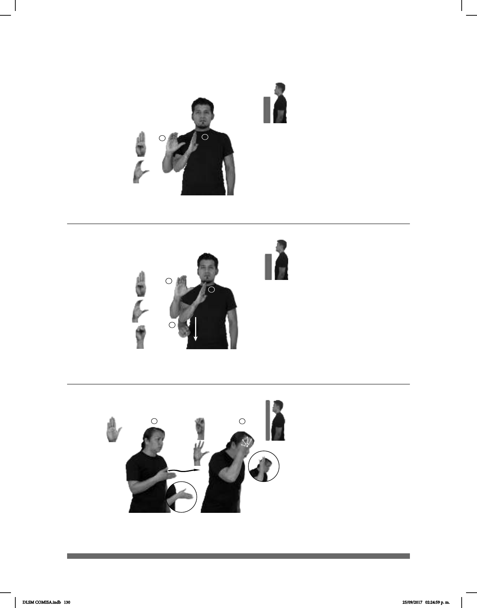

130
(B-P 58)
___muy
#BC PLAYA DIFERENTES LIMPIA
Las playas de Baja California son muy limpias.
Seña: SM
Seña que pasa de
B-P.1 a C.1
Palma hacia la
izquierda.
A la altura del pecho,
del centro al lado derecho.
Recto.
Estado ubicado en el
noroeste de México cuya capital es
Mexicali.
(B-P 59)
___muy
#BCS PLAYA DIFERENTES LIMPIA
Las playas de Baja California Sur son muy limpias.
Seña: SM
Seña que pasa de
B-P.1 a C.1 a S.1
Palma hacia la
izquierda.
Del pecho a la cintura.
La mano se mueve
formando el número siete.
Estado ubicado en el
noroeste de México cuya capital es
La Paz.
Seña: SC: I. y II. SM
I. B-P.2; II. Seña que cambia
de O.2 a 5.2
I. Palma hacia la izquierda;
II. Palma hacia arriba.
I. A la la altura del plexo del lado
derecho; II. A la altura de la sien.
I. La mano sigue una
trayectoria ondulada hacia enfrente; II. Los
dedos se extienden.
II. Cabeza inclinada
hacia enfrente, labios soplando.
Simula el nado de una ballena
y la expulsión de agua a través de su espiráculo.
sust. f. Cetáceo marino muy grande.
1
2
____muy
BALLENA ANIMAL GRANDE
La ballena es uno de los animales más grandes.
(B-P 60)
DLSM COMISA.indb 130 25/09/2017 02:24:59 p. m.